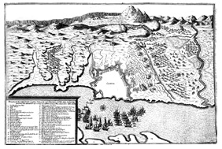

ALBÜM
Çemberlitaş’ın yanında, Tavukpazarı’nda kurulmuş
bir bayram yerinde halk eğlenceleri (CVI)
Alman yayıncı Matthaus Merian’ın 1641’de bastığı İstanbul panoraması
Alman yayıncı Matthaus Merian’ın 1641’de bastığı İstanbul panoraması
Adını, müşterilerinin ve bir kısım satıcıların kadın olmasından alan Avratpazarı (MC)
Kavun, karpuz, üzüm vs satan iki yemişçi dükkânı (MC), üstte
Eksik tartı kullanan bir esnafın başında işkembe ve önüne asılı çanla halk içinde
gezdirilerek cezalandırılışı (CVI), altta
1660’taki Büyük İstanbul Yangını (MC)
Bir gelin alayında ata binmiş gelinin sayvan altında geçişi (CVII), üstte
Bir gelin alayında nahıl taşıyanlar (CVII), altta
Cündi Meydanı’nda cirit oyunları (CVI)
Bâb-i Hümâyûn önünde bir karşılama merasimi (CVII)
Dîvân-i Hümâyûn’da kubbealtı vezirlerinin toplantısı ve
saray avlusunda bir ceza infazı (CVII)
III. Murad’ın ‘Arz Odası’nda elçi kabulü (CVI)
İstanbul’a gelen elçilik heyetlerinin konaklamasına ve iskânına tahsis edilen Elçi Hanı’nın
avlusu ile arka planda Çemberlitaş ve Atik Ali Paşa Camii’nin görünüşü. Bina 19. yüzyıl
sonlarında yıkılarak yerine Osman Bey Matbaası inşa edilmiştir. Bu bina da 1950’li
yıllarda yıktırılarak yerine içinde sinemaların da bulunduğu bir iş hanı yapılmıştır. (CVI)
Vezire rüşvet teklif eden bir elçinin başının Dîvân’da vuruluşu (MC), üstte
Venedik elçisiyle maiyetinin tutuklanarak Yedikule Zindanları’na götürülüşü (MC), altta
1649’da Osmanlı donanmasıyla Venedik-Felemenk donanması arasında yapılan Foça
deniz muharebesi (Abraham Beerstratenm), üstte
Hanya kuşatmasında donanma ve ordunun konumlarını
gösteren döneme ait bir çizim, altta

Osmanlı donanmasının Bozca-Ada’yı geri alışı (MC)
Scheither’in Hanya kuşatmasını gösteren 1672 tarihli çizimleri (üstte). Sol üstte,
Osmanlı mevzileri, hendekleri ve lağımları. Sağ üstte, lağımcılara karşı surların eteğinde
kurulan savunma sistemi. Sol altta lağımların içindeki çatışmalardan bir sahne;
alt kısımda lağımları patlatmak üzere yığılmış barut çuvalları. Sağ altta,
müstahkem mevkilerin planı.
Kapudân paşanın üç fenerli kadırgası (MC), altta